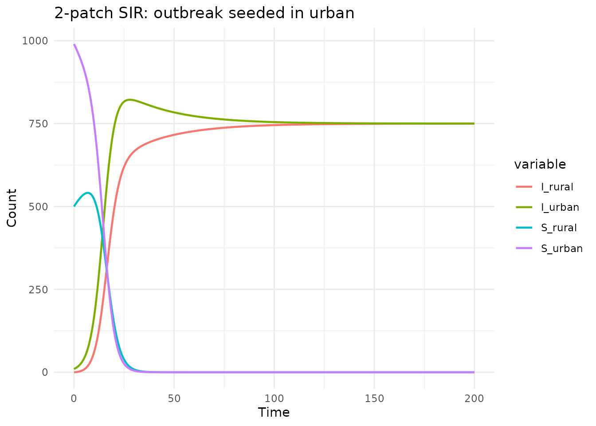
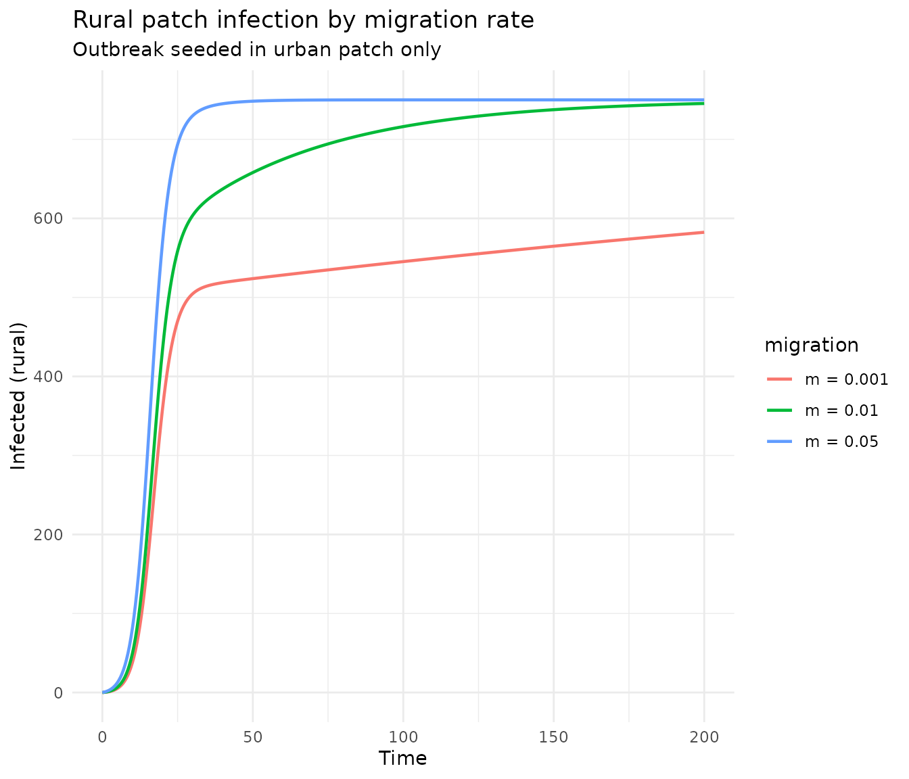
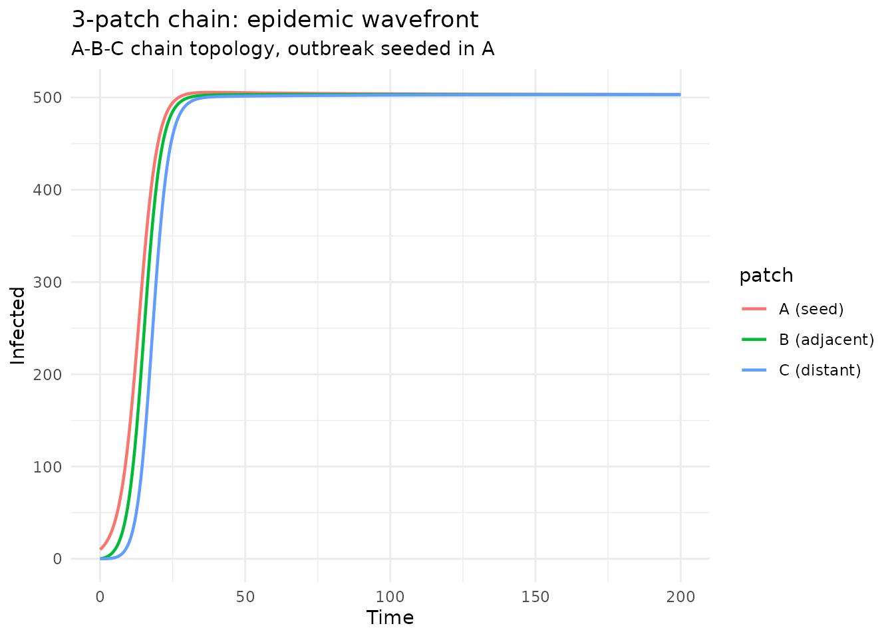

Introduction
Spatial heterogeneity is important in epidemiological modeling: disease dynamics can differ between locations due to population density, contact patterns, and movement between regions. Multi-patch (metapopulation) models capture this by dividing the population into discrete spatial units connected by migration.
In algebraicodin, spatial patches are modeled as a form
of stratification — each patch runs its own disease
dynamics, with migration as cross-strata flows and optional cross-patch
transmission via a contact matrix. The sf_spatial()
convenience function wraps this pattern.
Two-patch SIR with migration
Create the spatial model
sf_spatial() takes a base model, patch names, and
migration specs. The contact parameter adds a contact
matrix for cross-patch transmission:
sir_2patch <- sf_spatial(sir, c("urban", "rural"),
migration = list(
mig_ur = list(from = "urban", to = "rural",
rate = quote(m_ur * urban), params = "m_ur"),
mig_ru = list(from = "rural", to = "urban",
rate = quote(m_ru * rural), params = "m_ru")
),
contact = "C"
)
cat("Stocks:", paste(sf_snames(sir_2patch), collapse = ", "), "\n")
#> Stocks: S_urban, S_rural, I_urban, I_rural, R_urban, R_rural
cat("Flows:", length(sf_fnames(sir_2patch)), "\n")
#> Flows: 10
cat("Params:", paste(sf_pnames(sir_2patch), collapse = ", "), "\n")
#> Params: C_rural_rural, C_rural_urban, m_ur, m_ru, C_urban_urban, C_urban_ruralThe model has: - 6 stocks: S, I, R per patch - 10 flows: 4 disease (infection + recovery × 2 patches) + 6 migration (S, I, R × 2 directions) - 6 params: gamma, migration rates, and 4 contact matrix entries
Visualize
plot_stock_flow(sir_2patch)Generated odin2 code
cat(sf_to_odin(sir_2patch, type = "ode"))
#> C_rural_rural <- parameter()
#> C_rural_urban <- parameter()
#> m_ur <- parameter()
#> m_ru <- parameter()
#> C_urban_urban <- parameter()
#> C_urban_rural <- parameter()
#>
#> S_urban0 <- parameter(0)
#> initial(S_urban) <- S_urban0
#> S_rural0 <- parameter(0)
#> initial(S_rural) <- S_rural0
#> I_urban0 <- parameter(0)
#> initial(I_urban) <- I_urban0
#> I_rural0 <- parameter(0)
#> initial(I_rural) <- I_rural0
#> R_urban0 <- parameter(0)
#> initial(R_urban) <- R_urban0
#> R_rural0 <- parameter(0)
#> initial(R_rural) <- R_rural0
#>
#> N_urban <- S_urban + I_urban + R_urban
#> N_rural <- S_rural + I_rural + R_rural
#>
#> lambda_infection_urban <- C_urban_urban * I_urban / N_urban + C_urban_rural * I_rural / N_rural
#> lambda_infection_rural <- C_rural_urban * I_urban / N_urban + C_rural_rural * I_rural / N_rural
#> lambda_recovery_urban <- C_urban_urban * R_urban + C_urban_rural * R_rural
#> lambda_recovery_rural <- C_rural_urban * R_urban + C_rural_rural * R_rural
#>
#> v_infection_id_urban <- lambda_infection_urban * S_urban
#> v_infection_id_rural <- lambda_infection_rural * S_rural
#> v_recovery_id_urban <- lambda_recovery_urban * I_urban
#> v_recovery_id_rural <- lambda_recovery_rural * I_rural
#> v_mig_ur_S <- m_ur * S_urban
#> v_mig_ru_S <- m_ru * S_rural
#> v_mig_ur_I <- m_ur * I_urban
#> v_mig_ru_I <- m_ru * I_rural
#> v_mig_ur_R <- m_ur * R_urban
#> v_mig_ru_R <- m_ru * R_rural
#>
#> deriv(S_urban) <- - v_infection_id_urban - v_mig_ur_S + v_mig_ru_S
#> deriv(S_rural) <- - v_infection_id_rural + v_mig_ur_S - v_mig_ru_S
#> deriv(I_urban) <- v_infection_id_urban - v_recovery_id_urban - v_mig_ur_I + v_mig_ru_I
#> deriv(I_rural) <- v_infection_id_rural - v_recovery_id_rural + v_mig_ur_I - v_mig_ru_I
#> deriv(R_urban) <- v_recovery_id_urban - v_mig_ur_R + v_mig_ru_R
#> deriv(R_rural) <- v_recovery_id_rural + v_mig_ur_R - v_mig_ru_RSimulate: outbreak seeded in one patch
Disease starts in the urban patch and spreads to the rural patch via migration and cross-patch contact:
gen <- sf_to_odin_system(sir_2patch, type = "ode")
sys <- dust_system_create(gen(), list(
gamma = 0.1,
m_ur = 0.02, m_ru = 0.02,
C_urban_urban = 0.3, C_urban_rural = 0.05,
C_rural_urban = 0.05, C_rural_rural = 0.25,
S_urban0 = 990, I_urban0 = 10, R_urban0 = 0,
S_rural0 = 500, I_rural0 = 0, R_rural0 = 0
))
#> ── R CMD INSTALL ───────────────────────────────────────────────────────────────
#> * installing *source* package ‘odin.system5e0d334b’ ...
#> ** this is package ‘odin.system5e0d334b’ version ‘0.0.1’
#> ** using staged installation
#> ** libs
#> using C++ compiler: ‘g++ (Ubuntu 13.3.0-6ubuntu2~24.04.1) 13.3.0’
#> g++ -std=gnu++17 -I"/opt/R/4.5.3/lib/R/include" -DNDEBUG -I'/home/runner/work/_temp/Library/cpp11/include' -I'/home/runner/work/_temp/Library/dust2/include' -I'/home/runner/work/_temp/Library/monty/include' -I/usr/local/include -DHAVE_INLINE -fopenmp -fpic -g -O2 -Wall -pedantic -fdiagnostics-color=always -c cpp11.cpp -o cpp11.o
#> g++ -std=gnu++17 -I"/opt/R/4.5.3/lib/R/include" -DNDEBUG -I'/home/runner/work/_temp/Library/cpp11/include' -I'/home/runner/work/_temp/Library/dust2/include' -I'/home/runner/work/_temp/Library/monty/include' -I/usr/local/include -DHAVE_INLINE -fopenmp -fpic -g -O2 -Wall -pedantic -fdiagnostics-color=always -c dust.cpp -o dust.o
#> g++ -std=gnu++17 -shared -L/opt/R/4.5.3/lib/R/lib -L/usr/local/lib -o odin.system5e0d334b.so cpp11.o dust.o -fopenmp -L/opt/R/4.5.3/lib/R/lib -lR
#> installing to /tmp/RtmpMbFLnw/devtools_install_353a57af2f88/00LOCK-dust_353a2aea1887/00new/odin.system5e0d334b/libs
#> ** checking absolute paths in shared objects and dynamic libraries
#> * DONE (odin.system5e0d334b)
dust_system_set_state_initial(sys)
times <- seq(0, 200, by = 0.5)
res <- dust_system_simulate(sys, times)
state <- dust_unpack_state(sys, res)
df <- data.frame(
time = rep(times, 4),
value = c(state$I_urban, state$I_rural,
state$S_urban, state$S_rural),
variable = rep(c("I_urban", "I_rural", "S_urban", "S_rural"),
each = length(times))
)
ggplot(df, aes(x = time, y = value, colour = variable)) +
geom_line(linewidth = 0.8) +
labs(title = "2-patch SIR: outbreak seeded in urban",
x = "Time", y = "Count") +
theme_minimal()
The urban patch experiences its epidemic first; the rural patch follows with a delayed, smaller epidemic driven by migration and cross-patch transmission.
Effect of migration rate
run_model <- function(m_rate) {
sys <- dust_system_create(gen(), list(
gamma = 0.1, m_ur = m_rate, m_ru = m_rate,
C_urban_urban = 0.3, C_urban_rural = 0.05,
C_rural_urban = 0.05, C_rural_rural = 0.25,
S_urban0 = 990, I_urban0 = 10, R_urban0 = 0,
S_rural0 = 500, I_rural0 = 0, R_rural0 = 0
))
dust_system_set_state_initial(sys)
res <- dust_system_simulate(sys, times)
dust_unpack_state(sys, res)
}
states <- lapply(c(0.001, 0.01, 0.05), run_model)
df_mig <- rbind(
data.frame(time = times, I = states[[1]]$I_rural,
migration = "m = 0.001"),
data.frame(time = times, I = states[[2]]$I_rural,
migration = "m = 0.01"),
data.frame(time = times, I = states[[3]]$I_rural,
migration = "m = 0.05")
)
ggplot(df_mig, aes(x = time, y = I, colour = migration)) +
geom_line(linewidth = 0.8) +
labs(title = "Rural patch infection by migration rate",
subtitle = "Outbreak seeded in urban patch only",
x = "Time", y = "Infected (rural)") +
theme_minimal()
Higher migration rates produce earlier and larger epidemics in the rural patch.
Three-patch chain topology
sir_3patch <- sf_spatial(sir, c("A", "B", "C"),
migration = list(
mig_AB = list(from = "A", to = "B",
rate = quote(m * A), params = "m"),
mig_BA = list(from = "B", to = "A",
rate = quote(m * B), params = "m"),
mig_BC = list(from = "B", to = "C",
rate = quote(m * B), params = "m"),
mig_CB = list(from = "C", to = "B",
rate = quote(m * C), params = "m")
),
contact = "C"
)
cat("Stocks:", length(sf_snames(sir_3patch)), "\n")
#> Stocks: 9
cat("Flows:", length(sf_fnames(sir_3patch)), "\n")
#> Flows: 18
gen3 <- sf_to_odin_system(sir_3patch, type = "ode")
# Contact: mostly within-patch, some between adjacent patches
sys3 <- dust_system_create(gen3(), list(
gamma = 0.1, m = 0.02,
C_A_A = 0.3, C_A_B = 0.03, C_A_C = 0.0,
C_B_A = 0.03, C_B_B = 0.3, C_B_C = 0.03,
C_C_A = 0.0, C_C_B = 0.03, C_C_C = 0.3,
S_A0 = 500, I_A0 = 10, R_A0 = 0,
S_B0 = 500, I_B0 = 0, R_B0 = 0,
S_C0 = 500, I_C0 = 0, R_C0 = 0
))
#> ── R CMD INSTALL ───────────────────────────────────────────────────────────────
#> * installing *source* package ‘odin.systeme36bc279’ ...
#> ** this is package ‘odin.systeme36bc279’ version ‘0.0.1’
#> ** using staged installation
#> ** libs
#> using C++ compiler: ‘g++ (Ubuntu 13.3.0-6ubuntu2~24.04.1) 13.3.0’
#> g++ -std=gnu++17 -I"/opt/R/4.5.3/lib/R/include" -DNDEBUG -I'/home/runner/work/_temp/Library/cpp11/include' -I'/home/runner/work/_temp/Library/dust2/include' -I'/home/runner/work/_temp/Library/monty/include' -I/usr/local/include -DHAVE_INLINE -fopenmp -fpic -g -O2 -Wall -pedantic -fdiagnostics-color=always -c cpp11.cpp -o cpp11.o
#> g++ -std=gnu++17 -I"/opt/R/4.5.3/lib/R/include" -DNDEBUG -I'/home/runner/work/_temp/Library/cpp11/include' -I'/home/runner/work/_temp/Library/dust2/include' -I'/home/runner/work/_temp/Library/monty/include' -I/usr/local/include -DHAVE_INLINE -fopenmp -fpic -g -O2 -Wall -pedantic -fdiagnostics-color=always -c dust.cpp -o dust.o
#> g++ -std=gnu++17 -shared -L/opt/R/4.5.3/lib/R/lib -L/usr/local/lib -o odin.systeme36bc279.so cpp11.o dust.o -fopenmp -L/opt/R/4.5.3/lib/R/lib -lR
#> installing to /tmp/RtmpMbFLnw/devtools_install_353a4143d4ba/00LOCK-dust_353a168527/00new/odin.systeme36bc279/libs
#> ** checking absolute paths in shared objects and dynamic libraries
#> * DONE (odin.systeme36bc279)
dust_system_set_state_initial(sys3)
res3 <- dust_system_simulate(sys3, seq(0, 200, by = 0.5))
state3 <- dust_unpack_state(sys3, res3)
t3 <- seq(0, 200, by = 0.5)
df3 <- data.frame(
time = rep(t3, 3),
infected = c(state3$I_A, state3$I_B, state3$I_C),
patch = rep(c("A (seed)", "B (adjacent)", "C (distant)"),
each = length(t3))
)
ggplot(df3, aes(x = time, y = infected, colour = patch)) +
geom_line(linewidth = 0.8) +
labs(title = "3-patch chain: epidemic wavefront",
subtitle = "A-B-C chain topology, outbreak seeded in A",
x = "Time", y = "Infected") +
theme_minimal()
The epidemic propagates as a wavefront: A peaks first, then B, then C.
Without a contact matrix
For simpler models where transmission is purely within-patch, omit
the contact parameter:
sir_simple <- sf_spatial(sir, c("north", "south"),
migration = list(
mig_ns = list(from = "north", to = "south",
rate = quote(m * north), params = "m"),
mig_sn = list(from = "south", to = "north",
rate = quote(m * south), params = "m")
)
)
cat("Params:", paste(sf_pnames(sir_simple), collapse = ", "), "\n")
#> Params: beta, gamma, mHere beta and gamma are shared across
patches. Each patch transmits only within its own population.
Stochastic spatial model
stoch_code <- sf_to_odin(sir_2patch, type = "stochastic")
cat(head(strsplit(stoch_code, "\n")[[1]], 10), sep = "\n")
#> C_rural_rural <- parameter()
#> C_rural_urban <- parameter()
#> m_ur <- parameter()
#> m_ru <- parameter()
#> C_urban_urban <- parameter()
#> C_urban_rural <- parameter()
#>
#> S_urban0 <- parameter(0)
#> initial(S_urban) <- S_urban0
#> S_rural0 <- parameter(0)
cat("...\n")
#> ...Using sf_stratify() directly
sf_spatial() is a convenience wrapper. For full control,
use sf_stratify():
sir_direct <- sf_stratify(sir, c("p1", "p2"),
flow_types = c(infection = "disease", recovery = "disease"),
cross_strata_flows = list(
list(name = "mig_12", from = "p1", to = "p2",
rate = quote(m * p1), params = "m"),
list(name = "mig_21", from = "p2", to = "p1",
rate = quote(m * p2), params = "m")
),
mixing = list(infection = "C")
)
cat("Equivalent result:", length(sf_fnames(sir_direct)), "flows\n")
#> Equivalent result: 10 flowsSummary
| Function | Use case |
|---|---|
sf_spatial() |
Convenience wrapper for multi-patch models |
sf_stratify() with cross-strata flows |
Full control over spatial structure |
mixing / contact
|
Cross-patch transmission via contact matrix |
Key points: - Patches are treated as strata in the stratification framework - Migration = cross-strata flows (apply to all compartments) - Contact matrix = cross-patch transmission weighting - Works with any base model (SIR, SEIR, etc.) - Generates compilable odin2 code (ODE, stochastic, discrete)